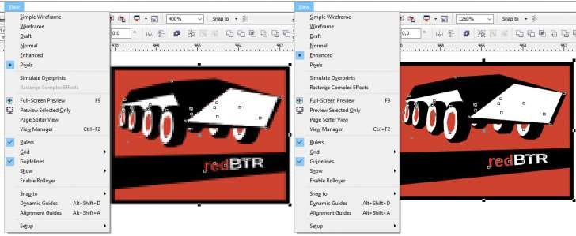

вектор выглядит как растр
Gala_77 / 26.08.2015, 21:30
Форум:
Подскажите, пожалуйста, как это исправить!:) У меня на 2х компах стоит корэл. На одном все отлично, но когда я перекидываю файлы с другого у меня они странные. В том плане, что вся векторная графика выглядит как растровая плохого разрешения...и при приближении ведет себя как растровая. Даже если я создаю новые объекты в этом же файле - они все равно выглядят как растровые....Corel Х6 и там, и там. Заранее большое спасибо!!!:)
Не видя, что там происходит на самом деле, трудно сказать, но иногда такое может быть, если файл был создан с низким разрешением. По умолчанию Корел создает файлы с разрешением 300 dpi, если по какой-то причине разрешение было выбрано, например, 72 dpi, то оно (изображение) будет выглядеть размытым, особенно при увеличении масштаба.
Baryga88, подскажите, пожалуйста, а где можно посмотреть установленное разрешение?:)
Не знаю, как в Х5 (не помню просто), а в Х7 - Файл > Свойства документа. По идее в Х5 команда та же должна быть.
Должно появится окно свойств. Я специально создал документ с разрешением в 100 dpi... (см. рис)
Также проверьте, что выставлено в меню Вид. Если режим Обычный (Нормальный), тоже может смазана картинка, нужно чтобы был выставлен режим Улучшенный.
Baryga88, все проверила, все нормально....300 разрешение и режим правильный...Не знаю даже в чем дело))
Что значит ведёт себя как растровая?
Solowejka, ну как будто в коржле растровая картинка не очень хорошего разрешения. Т.е. на рабочем столе все в пикселях при приближении.
а если на втором компе создаете новый файл - там тоже плохо всё выглядит? И было бы неплохо взглянуть на скриншоты. Кроме того, можно на втором компе создать файл, скинуть его на первый комп и пересохранить его там, заодно проверив размер.
Возможно, дело в избыточной информации, "цепляющейся" к файлу при сохранении, стили или виды. В крайнем случае, можно попробовать конфигурационный файл с первого компа переписать на второй или же на втором компе выполнить сброс настроек

типа показывает как слева а надо как справа?
Вместо пиксельнгого вида выберете расширенный, на скринах видно какая менюшка.